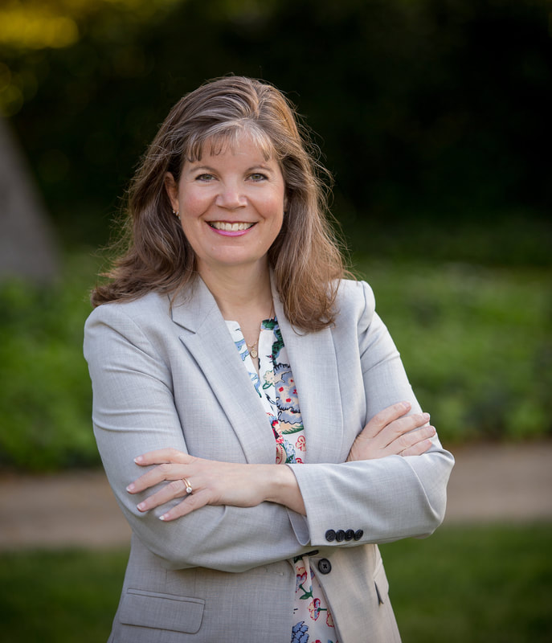

Dublin Mayor Candidates
Tom Evans
- Lived in Dublin for 40 years
- Worked nights at a grocery store while studying civil engineering at Cal Berkeley
- Raised a family in Dublin, witnessing its fast growth and diversity
- Praises police and fire departments for maintaining community protection
- Running for mayor to oppose poorly planned projects (e.g., annexing open space, high-rise buildings, costly road projects)
- Concerned about developer influence over zoning changes
- Supports better architectural standards and planning, especially between the city and schools
- Opposes uncontrolled growth, advocates for adherence to Affordable Housing goals
- Wants Dublin to stop being a "developers' doormat" and offers no-nonsense leadership

Sherry Hu
- Current Vice Mayor of Dublin, serving on city council for four years
- Has lived in Dublin while raising a family
- Helped balance the city's budget and achieved $200 million in reserves
- Added police officers and effectively addressed homelessness
- Opened Don Biddle Park and improved Fallon Sports Park
- Upgraded infrastructure and supported local businesses
- Helped start 100 new businesses and promoted education
- Enhanced community sports and programs
- Founded a charity that teaches leadership skills and provides educational opportunities for local students
- Plans to prioritize public safety, preserve quality of life, protect hillsides, and control overdevelopment
- Committed to ensuring smooth traffic flow and supporting community and education
- Holds a Ph.D. in engineering and is a local business owner
- Dedicated to preserving Dublin's way of life and improving the city
- Seeks to foster collaboration and unity as mayor
- Asks for your vote to lead Dublin to new heights

Jean Josey
- Experienced Councilmember (Vice Mayor in 2022), 24-year Dublin resident, educator, and volunteer
- Committed to well-researched, long-range decision-making to guide Dublin through growth and diversity
- Focus on maintaining and improving public safety services (fire, police, and mental health resources)
- Attracting new businesses (dining and entertainment) while supporting existing businesses
- Protecting parks and open spaces, and maintaining environmental health
- Improving sustainable transportation options
- Equitably managing growth and improving housing affordability
- Keeping Dublin fiscally sustainable
- Ensuring City Council maintains the "One Dublin" ethos during by-district elections
- Elected to City Council in 2018 and re-elected in 2022 by overwhelming majorities
- Endorsed by a broad coalition of Dublin residents, community leaders, and elected officials

Shawn Costello
- Running in his eighteenth election
- Despite being in a wheelchair, emphasizes mental sharpness and perseverance
- Served as Vice-Chair of the Human Services Commission twice over the past 6 years
- Member of the PAPCO Commission for 20 years, distributing funds to bus companies in Alameda County
- On the Wheels Board TAAC for 30 years, currently serving as chairperson
- Advocates strongly for disabled rights
- Running to inspire others with disabilities to run for office
- Opposes the building of housing that only the wealthy can afford, supports affordable housing for all
- Stands in support of first responders who take care of the community